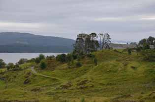

The course will take place at the Heathland Centre on the island of Lygra, western Norway. Lygra lies in the Lindås municipality of Hordaland, approximately 50km north of the city of Bergen. The course lectures will start promptly at 9am on Monday 17th September but we advise that participants arrive at Lygra on the afternoon and evening of Sunday 16th. We have arranged for an evening meal to be served that evening (for around 6pm) and the course accommodation will be available from Sunday afternoon. The last lecture on the 21st will end at 5:00pm and participants are welcome to stay for an evening meal before leaving the centre. It may also be possible to arrange for participants to stay for an extra night on Lygra on the night of the 21st if required.
Participants will be accommodated at the Lygra Gjestegard, a farmhouse situated in the immediate vicinity of the Heathland Centre. Accommodation is in shared rooms (maximum 6 people per room). The course fees cover the accommodation and use of the communal areas from the 16th to the 21st September. Please note that there are no shops nearby and, although meals and snacks will be provided, participants are requested to bring enough supplies (such as toiletries, leisure items and extra snacks) with them to last for the entire course.
It is also possible to use the same ferry route to leave the island on Friday 21st September and the return ferry will leave the island at 7:55pm. There is also a public bus route between the Heathland centre and Bergen bus terminal. You can use the journey planner provided by Skyss, searching for buses between 'Lygra snuplass' and 'Bergen busstasjon'. The bus station in Bergen is a convenient hub for onward travel: all express buses heading to the airport will stop at the bus station and Bergen railway station lies directly opposite.
Bergen is well served by two nearby international airports: Bergen (Flesland) airport and Haugesund airport. There are regular express bus services between Bergen (Flesland) airport and the bus station run by Flybussen. Tickets can be easily purchased at the airport and cost around 105 NOK for a single to Bergen and 155 NOK for a return trip. The journey time is approximately 30 minutes. It is also possible to take the Bybanen (Bergen's light rail system) to the centre from the airport, this will be significantly cheaper (around 37 NOK for a single ticket) but will take about 50 mins to reach the city centre. Timetables for the Bybanen can be found on the Skyss website.
Bergen is the western-most terminus of the famously beautiful Oslo-Bergen train line. Tickets can be purchased from NSB. There is also a direct ferry to Bergen from Hirtshals in Denmark operated by Fjordline.